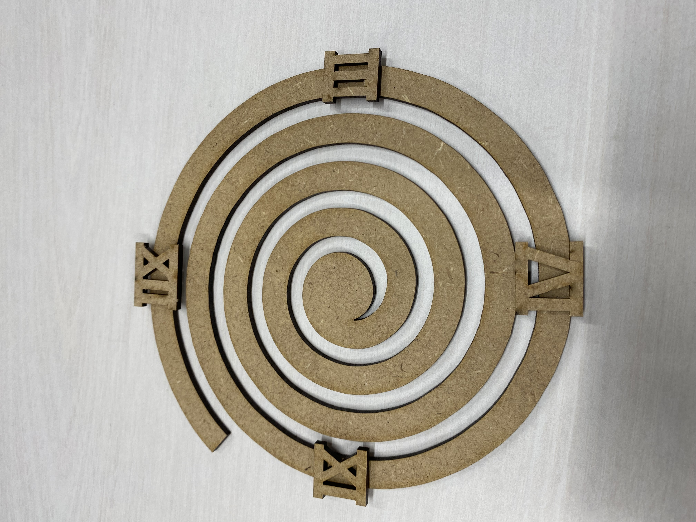
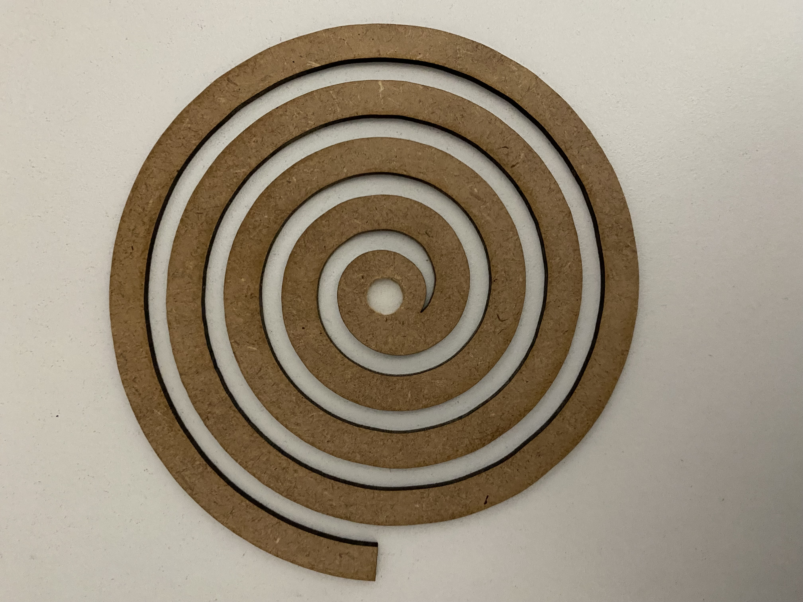
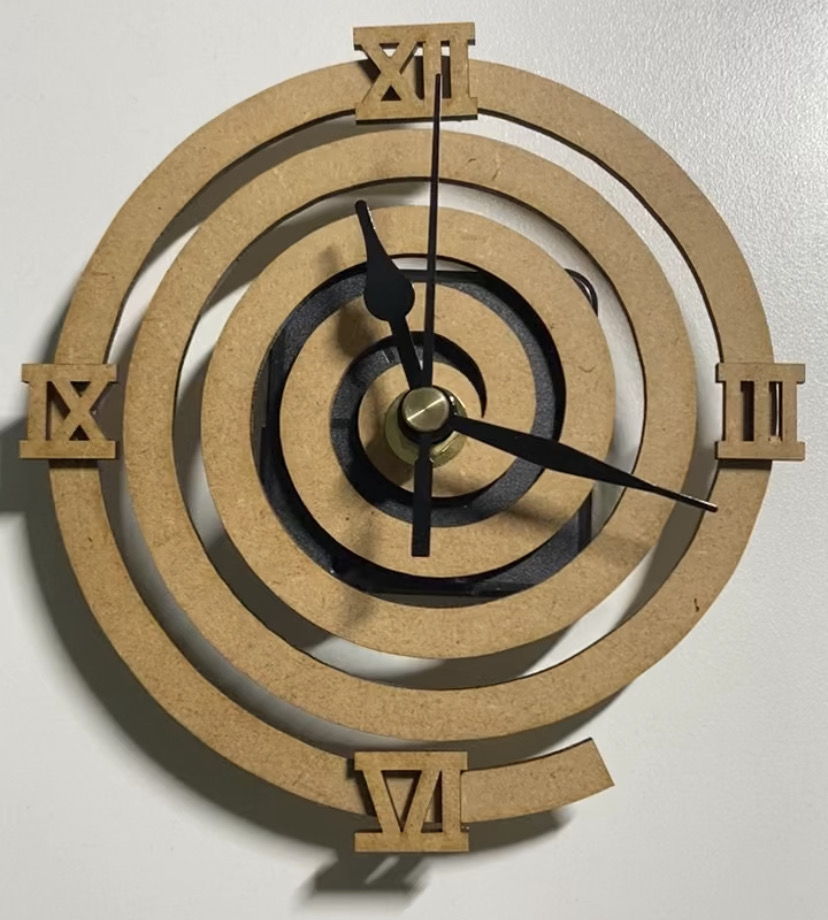

1.作品のタイトル
目まぐるしい時を表す針時計
2.構造段階の手書きスケッチ、ストーリーボードなどの写真

3.実際に作った作品の画像

↓穴開けるのを忘れて、家に帰ってアイスピックとはさみ、カッターを使ってこじ開けた


4.設計ファイル（stlファイルをfilesフォルダに入れて、そこにリンクを貼ってください）
dxfファイル
aiファイル
5.作品の説明
渦巻の形をした時計。ローマ数字でインテリア雑貨な感じを表現。
6.なぜこの作品を作ろうという想いに至ったか
自分が時間に追われているのを今現在も感じているのと、他の人も課題に追われる日々を送っているのを聞いて作ろうと思った。
目まぐるしい時の流れが戻れば良いなと感じ、その思いを形で表現した。
また、その感情を起こす物である時計と融合させることで、手にとってもらえるデザインができるのではないかと考えた。
結果・感想
自分としては渦巻を表現したかったが、時計になるまでの過程で「蚊取り線香だと思った」と多くの人に言われた。
自分の表現を相手に分かってもらうためには、分かりやすく、かつ志向を凝らしたアイデアが大事だと感じた。